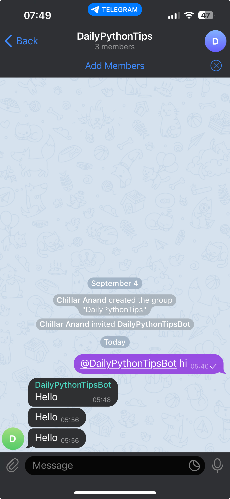

Create Telegram Bot To Post Messages to Group
Introduction
Recently I had to create a Telegram bot again to post updates to a group based on IoT events. This post is just a reference for future.
Create a Telegram Bot
First, create a bot using BotFather in the Telegram app and get the API token. Then, create a group and add the bot to the group. This will give the bot access to the group.
Post Messages to the Group
Now, we need to fetch the group id. For this, we can use the following curl API call.
curl is available by default on Mac and Linux terminals. On Windows, we can use curl from command prompt.
$ curl -X GET https://api.telegram.org/bot<API_TOKEN>/getUpdates { "ok": true, "result": [ { "update_id": 733724271, "message": { "message_id": 9, "from": { "id": 1122, "is_bot": false, "username": "ChillarAnand", "language_code": "en" }, "chat": { "id": -114522, "title": "DailyPythonTips", "type": "group", "all_members_are_administrators": true }, "date": 1694045795, "text": "@DailyPythonTipsBot hi", "entities": [ { "offset": 0, "length": 19, "type": "mention" } ] } } ] }
This will return a JSON response with the group id. It sends empty response if there are no recent conversations.
In that case, send a dummy message to the bot in the group and try again. It should return the group id in the response.
We can use this group id to post messages to the group.
$ curl -X POST https://api.telegram.org/bot<API_TOKEN>/sendMessage -d "chat_id=<GROUP_ID>&text=Hello" { "ok": true, "result": { "message_id": 12, "from": { "id": 3349238234, "is_bot": true, "first_name": "DailyPythonTipsBot", "username": "DailyPythonTipsBot" }, "chat": { "id": -114522, "title": "DailyPythonTips", "type": "group", "all_members_are_administrators": true }, "date": 1694046381, "text": "Hello" } }
Here is the message posted by the bot in the group.

Now, we can use this API to post messages to the group from our IoT devices or from any other devices where curl command is available.

Chillar Anand
A blog about python, careers & life.
To contact me, send a message here.